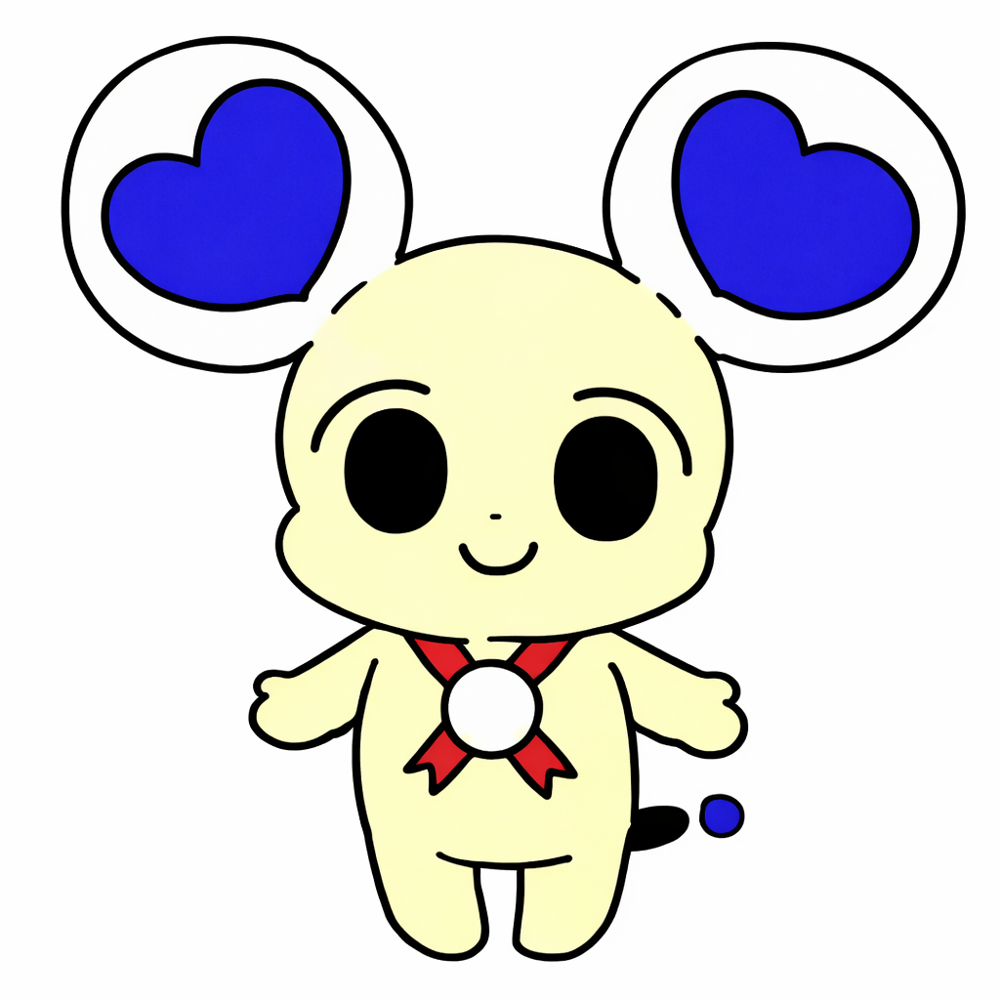
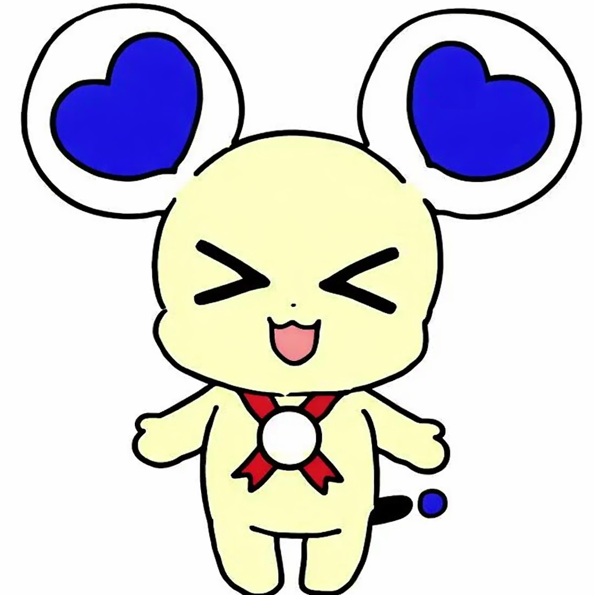
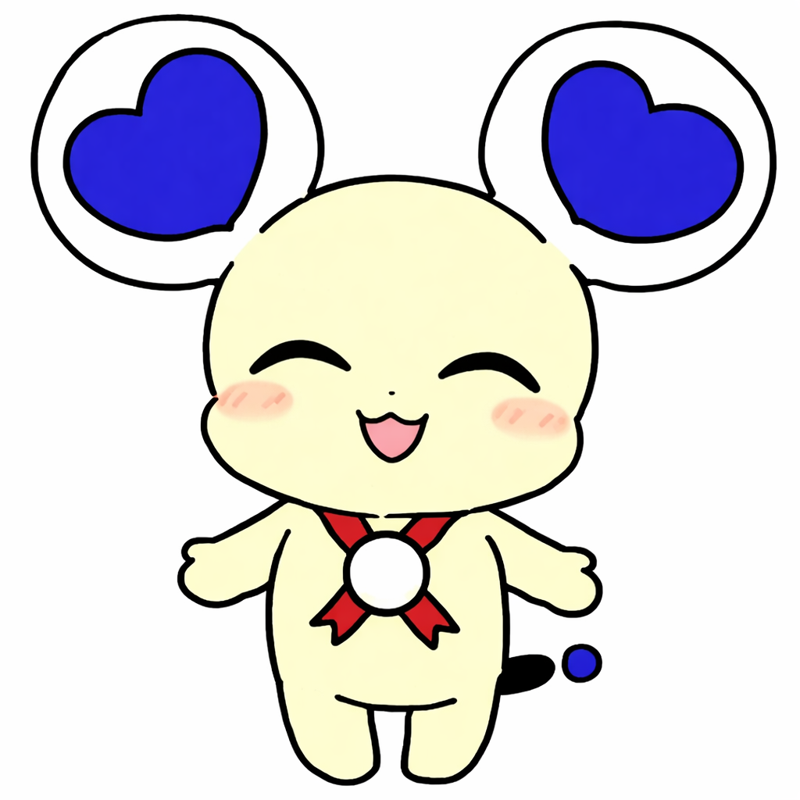

🎵 モールス信号体験アプリ 📡
モールス信号の世界へようこそ！
あなたの名前をモールス信号に変換したり、 実際にモールス入力を体験してみましょう。
あなたの名前をモールス信号に変換したり、 実際にモールス入力を体験してみましょう。

僕と一緒にモールス信号を学ぼう！
右上の⚙️を押すと設定画面が開けます。使用言語などが変更可能です。
Press the ⚙️ in the upper right to open the settings screen.
You can change the language and other settings.
名前入力
変換・再生
モールス入力
完了
自分の名前を入力してみよう！
(例：まーるす)

僕の名前は「まーるす」！
特技はモールス信号を打つこと！
君の名前もモールス信号にしてあげるよ！
特技はモールス信号を打つこと！
君の名前もモールス信号にしてあげるよ！
マールスに自分の名前を教えてみよう！
名前入力
変換・再生
モールス入力
完了
モールス信号に変換しました！

君の名前をモールスにしたよ！
さんのお名前は：
それぞれの文字はこんな感じで対応しているよ！
実際にモールスを聞いてみよう！音をダウンロードすることもできるよ！

今度は君がモールスをうってみてよ！
下のボタンから移動しよう！
下のボタンから移動しよう！
名前入力
変換・再生
モールス入力
完了
自分の名前を入力してみよう！
「・」（短音）と「－」（長音）と「／」(区切り) を組み合わせて文字を作るんだ！
本当はボタンを押している長さで区別するけど、今回は簡単にボタンで入力しちゃおう！
見慣れないボタンの説明をするね！
DEL: 一文字消す
C: 全て消す
🔊: 現在の入力を再生・確認
あと、区切りの「／」も忘れずにね！下の注意事項も見ておこう！
DEL: 一文字消す
C: 全て消す
🔊: 現在の入力を再生・確認
あと、区切りの「／」も忘れずにね！下の注意事項も見ておこう！
・直接の文字入力は無効
・挿入位置を指定して削除可能
・挿入位置を指定して削除可能
困ったときは、「💡 ヒント」でさっきの音を聞けるよ！下のモールス信号表をクリックして対応を確認してみるのもいいね！
自分の名前が完成したら「✅答え合わせ」を押してね！難しいけど、がんばって！
名前入力
変換・再生
モールス入力
完了
🎉 おつかれさまでした！
モールス信号の体験はどうだった？おもしろかったかな？
昔の人たちはこの方法で遠くの人と連絡を取っていたりしたんだよ！詳しく知りたかったらぜひミュージアムで調べてみてね！
クイズに挑戦してみませんか？
3択クイズもあるんだけど、挑戦してみない？
きっとモールス信号の理解が深まるよ！
質問がここに表示されます
モールス変換所

モールスの解析や変換が出来るよ！
解析 (Upload & Analyze)
ファイルを選択して「解析する」を押すと、検出されたモールス記号が表示されます。
現在の使用言語は日本語(かな)です。
(The current language in use is not English.)
現在の使用言語は日本語(かな)です。
(The current language in use is not English.)
解析結果が表示されます ↑
変換 (Convert Text)
ここに変換したい文字を入力してください。使用言語には注意してください。
現在の使用言語は日本語(かな)です。
(The current language in use is not English.)
現在の使用言語は日本語(かな)です。
(The current language in use is not English.)
入力したテキストは自動でモールスに変換されます。コピーや再生、MP3ダウンロードが可能です。